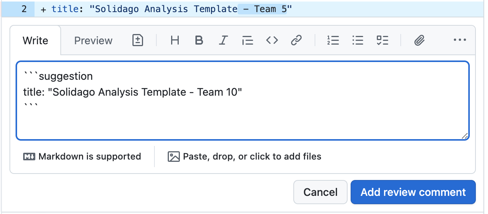
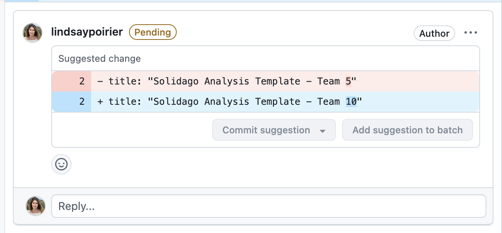
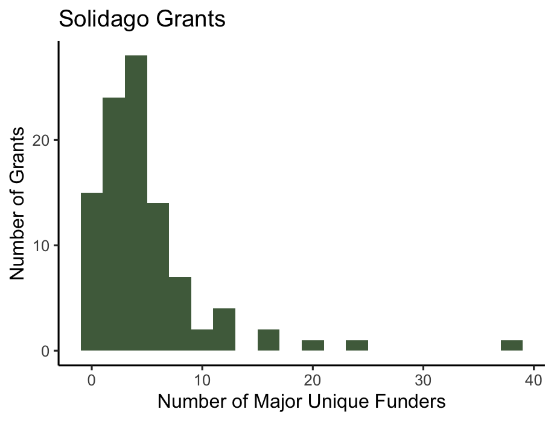

my_plot <- solidago_docket_grants |>
mutate(major_unique_funders = as.numeric(major_unique_funders)) |> ggplot(aes(x = major_unique_funders)) +
geom_histogram(binwidth = 2, fill = "#4f6b4b") + theme_classic() +
labs(title = "Solidago Grants", x = "Number of Major Unique Funders", y = "Number of Grants")
my_plotDay X: Code Review
SDS 238: Community-Based Data Science
Think about a time that you received feedback on an assignment or project. What were some qualities of that feedback that made it helpful for improving your project?
Turn to a neighbor:
- Share your feedback experience
- Together, write on three sticky notes three separate qualities of constructive feedback
- Add the sticky notes to the brown paper in the center of the classroom.
Agenda
- Overview of Code Review
- Code Review Features in GitHub
- Code Review In-Class Practice
- Code Review Workshop
What is code review?
- Peer review of a codebase
- Examines the functionality, style, clarity, and relevance of code
- Helps identify issues with code and assess adherence to coding standards
Why do code review?
Orienting to Code Review Features in GitHub
Code review in GitHub happens before a pull request gets merged into the main branch.
- Navigate to a repo’s pull requests
- Select the pull request you have been assigned to review
- Navigate to the Commits tab and take a look at the pull request’s commit history
- Navigate to the Files Changed tab and take a look at the files changed.
- Original File on the left, and the revised file on the right.
- Additions highlighted in blue and deletions highlighted in red.
- Here, you can comment on:
- individual lines of code
- files
- the entire set of changes
Suggesting Changes Code Review in GitHub
- You may simply leave comments in GitHub on lines or files
- You can also suggest in-line changes that can be quickly committed back to the code.
 
Today’s Code Review
- Code Style: Is code legible and clear?
- Visualization Conventions: Do visualizations follow our class style standards (e.g. titling, color, missing data, etc)?
- Visualization Effectiveness: Does the visualization answer the research question at hand?

Activity
- Navigate to our GitHub repo’s pull requests
- Open the Code Review Practice Pull Request, and click on the Files Changed tab
- Scroll to the code chunk assigned to your group
- Leave an in-line review to improve this plot
Code Review Workshop
- Each team of 2-3 should review at least two visualizations. Select 2 from the print-outs on your table.
- Navigate to the pull request associated with the group you’ve been assigned, and open “Files Changed.” Find the code for the plots you selected.
- Complete the code review checklist for each visualization and discuss its relevance and effectiveness
- Leave in-line comments on the visualization at GitHub
- Click the “Review Changes” button, leave a collegial comment, and then “Finish Review”
Reflection
- What was it like to “read” another person’s code?
- What considerations should we make to ensure that our feedback on code is constructive and collegial?